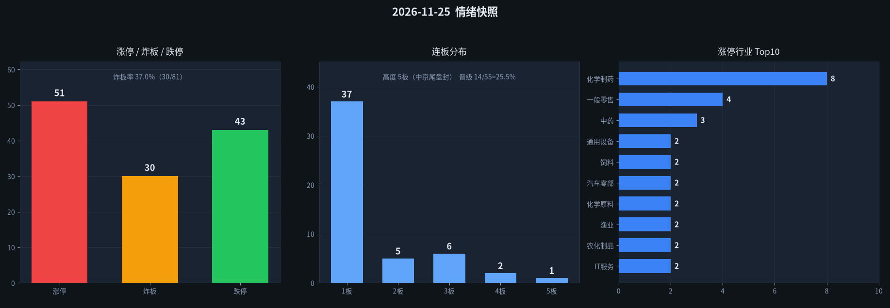

交易日 2026-11-25（周三） · 目标交易日 2026-11-26（周四） · 退潮加深·跌停扩散
情绪：退潮（加深） 涨停 51 · 跌停 43 炸板率 37.0% · 晋级率 25.5% · 高度 5板| 票 | 昨动作 | 今收盘涨跌幅 | 判定 |
|---|---|---|---|
| 全市场 | 空仓观望 | 上证 −2.03%、创业 −4.19%、中证1000 −4.44%；跌停 2→43 | 对 |
| 中京 / 九阳 / 金新农 / 克来等残留高度 | 不加 | 中京尾盘14:54偷鸡 +10% 至5板（额41.87）；九阳高开+6.79%炸7回封 +10.01% 至3板；金新农/克来小额4板；东方海洋 −4.41%、长华炸板 +4.91% | 部分对 |
| 汽车零部 / 算力中军 | 只观察不加 | 拓普 −9.50%、新泉 −8.80%、沪电 −5.52%、瑞芯微 −6.65% | 对 |
| 断板、尾盘脉冲、跌停 | 不加 / 不抄 | 文投 −9.87%、阳光 −9.90%、鑫铂/英力特再跌停；盛剑回封涨停、真视通 +8.08% | 对 |
总结：空仓、不追中军、不抄跌停全部对。残留高度里中京/九阳/金新农/克来今天仍封住，但封板更脏（尾盘偷鸡、炸7、小额一字），且跌停扩散，说明不该把它们当主仓。
改进：1）即使个别高度板尾盘偷鸡封住，退潮日也不把这类回封当空间龙（未回测）；2）炸板率从高位回落本身不是升级信号，先看跌停是否收敛（未回测）。
退潮（加深）。跌停 2→43 明显扩散，红盘 34.44%→9.29%，活跃度 35.18%→10.85%，指数低开低走（上证−2.03%、创业−4.19%、中证1000−4.44%），亏钱效应主导。涨停 55→51 几乎持平，晋级 14/55=25.5% 略升，炸板率 55.3%→37.0% 回落但仍偏高；高度板质量更差（中京尾盘偷鸡5板、九阳炸7），中军全面回撤。涨停数量尚未打到近两周冰点附近（约23–28），故定为退潮加深，不是冰点。

涨停 / 炸板 / 跌停 · 连板分布 · 涨停行业 Top10（东财清洁池，剔 ST / 北交所后无需再剔）
| 指标 | 今日 | 昨日 | 变化 |
|---|---|---|---|
| 涨停（清洁） | 51 | 55 | −4 |
| 跌停（清洁） | 43 | 2 | +41 |
| 炸板 | 30 | 68 | −38 |
| 炸板率 | 37.0%（30/81） | 55.3%（68/123） | 回落但仍偏高 |
| 连板高度 | 5板（中京电子，14:54封，额41.87亿） | 4板（中京一字，额8.33亿） | 高度+1，质量更差 |
| 昨涨停晋级率 | 14/55=25.5% | 30/145=20.7% | 略升 |
| 昨涨停炸板 / 改跌停 | 炸2、跌停5 | — | 昨涨停改跌停5只 |
| 红盘占比 | 9.29%（上涨500 / 下跌4825 / 平盘56，合计5381） | 34.44% | 广度近冰点 |
| 两市成交额 | 约13831亿（上证6527 + 深成7304） | 约16551亿 | 缩量约2720亿 |
| 涨停 / 炸板 / 跌停池额 | 304.5 / 106.5 / 189.0 亿 | 301.9 / 891.3 / 3.4 亿 | 炸板额下降，跌停额暴增 |
连板分布：1板 37、2板 5、3板 6、4板 2、5板 1。三池清洁后无需再剔 ST/北交所（raw=clean）。
今天没有干净主线。钱没有集中在一条可辨识的空间龙或中军上，更像退潮里的防守杂毛和偷鸡回封。
空间龙 / 趋势龙 / 中军：无。辅线与高度杂毛分开看，都不升级开仓。
情绪 = 退潮（加深） → 专项总仓建议 0%（默认空仓，未回测）；同时持仓建议 0 只；不接力中京5板与脏/小额高度，不追医药首板簇，不抄跌停和断板反抽。
| 代码+名称 | —（不点名追昨涨停或残留高度） |
|---|---|
| 动作 | 空仓观望（默认） |
| 进场 | 无。周四竞价若昨涨停大量低开＞5%，或中京/九阳等高度板打开后直线砸，或跌停继续走扩、指数快速跳水 → 全天不交易。 |
| 仓位 | 0%（未回测） |
| 原因 | 退潮加深：跌停 2→43、红盘约 9.3%、中军回撤，高度板质量差。 |
| 作废 | 仅当盘中同时出现「跌停明显收敛、炸板率继续回落、出现早盘干净大额首板且中军同步」才允许把观察线升级为极轻试错（否则维持空仓，未回测）。 |
| 代码+名称 | 002579 中京电子；002242 九阳股份；002548 金新农、603960 克来机电；603926 铁流股份；002122 汇洲智能、002164 宁波东力、300703 创源股份、600814 杭州解百 |
|---|---|
| 动作 | 不加（不接力中京尾盘5板，不追九阳炸7回封3板，不接金新农/克来小额4板，不追铁流炸12及小额3板） |
| 仓位 | 0% |
| 原因 | 高度板要么尾盘偷鸡、要么反复炸板、要么地量一字，都不是空间龙。 |
| 代码+名称 | 002275 桂林三金、000756 新华制药、002038 双鹭药业、300086 康芝药业、301211 亨迪药业、002728 特一药业、002864 盘龙药业 等医药/中药首板 |
|---|---|
| 动作 | 只观察 / 不加（不把防守杂毛簇当新主线） |
| 进场 | 无开仓。只记录竞价是否整齐、中军有没有出现。高开＞3% 或一字直接放弃。 |
| 仓位 | 0%（未回测） |
| 原因 | 13 只合计额仅约 32.9 亿，多数小额或反复炸板，没有中军，退潮里的防守簇。 |
| 作废 | —（升级条件见指令1，未回测） |
| 代码+名称 | 601689 拓普集团、000678 襄阳轴承、603179 新泉股份；002463 沪电股份、002916 深南电路、603228 景旺电子、300308 中际旭创、300502 新易盛、300394 天孚通信、603893 瑞芯微 |
|---|---|
| 动作 | 只观察 / 不加（不抄中军低位，不追天孚单独脉冲） |
| 进场 | 无开仓。只记录竞价强弱与中军是否同步。高开＞3% 或一字直接放弃。 |
| 仓位 | 0%（未回测） |
| 原因 | 汽车零部中军已撤；算力中军多数回落，天孚是单独脉冲，不是板块共振。 |
| 作废 | —（升级条件见指令1，未回测） |
| 代码+名称 | 003038 鑫铂股份、000635 英力特（2连跌）；600641 先导基电、600619 海立股份、601595 上海电影 等今日跌停；603324 盛剑科技、002771 真视通；600722 金牛化工、600103 青山纸业 |
|---|---|
| 动作 | 不加 / 不抄底（不抄跌停，不追盛剑回封和真视通反抽，不追金牛午后2板、青山脏首板） |
| 仓位 | 0% |
| 原因 | 跌停已扩散到 43 只，不是反包信号；盛剑/真视通是断板后的反击，退潮里次日容易被砸；金牛/青山不成线。 |